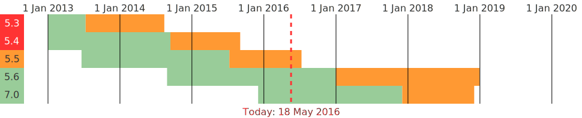
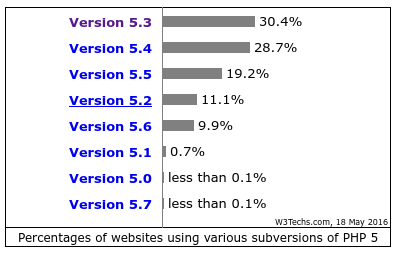
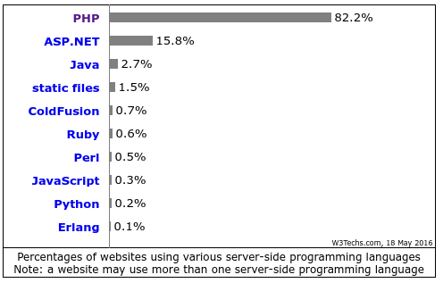

Platform.sh
PHP 2016
A Quick, Informative, Totally Biased summary of the PHP ecosystem in 2016
Presented by Larry Garfield (@Crell)
@Crell
- Director of Runtimes and Integrations, Platform.sh
- Drupal 8 Web Services Lead
- Drupal Representative, PHP-FIG
implements Huggable
History
Over-simplified
History
- PHP/FI 1, 2, circa 1995
- Random hacks by a random hacker
- PHP 3, circa 1998
- Well it's a backward language but it's a language
- PHP 4, circa 2000
- The start of actual applications
- PHP 5, circa
20042007 - A worthwhile language, just took a while
- PHP
65.3, circia 2009 - The PHP Renaissance
- PHP 7, circa 2015
- We're living in the future(-ish)!
The long road to collaboration
- Where do I find code?
- Packagist.org
- How do I get code?
- Composer
- How do I load your code?
- Autloading
- How do I load everyone's code?
PSR-0PSR-4- Name clashes?
- Namespaces
- How can I collaborate on code?
- GitHub
- Can I exchange code?
- PHP-FIG standard interfaces
PHP has an upgrade problem
Supported versions
 Source: http://php.net/supported-versions.phpMost current versions of PHP applications require PHP 5.5 or later
(Wordpress requires 5.2, because they're lame conservative)
Found on servers dead
 Source: http://w3techs.com/technologies/details/pl-php/all/allPHP still rules
 Source: http://w3techs.com/technologies/overview/programming_language/all(What % of that is small WP sites? Unclear.)
Current status:
Learning to get along

Larry Garfield
Director of Runtimes and Integrations Platform.sh
Continuous Deployment Cloud Hosting
Stalk us at @PlatformSH